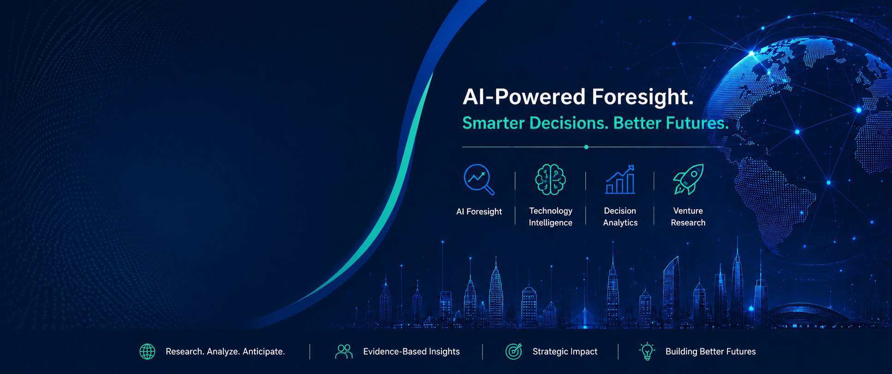
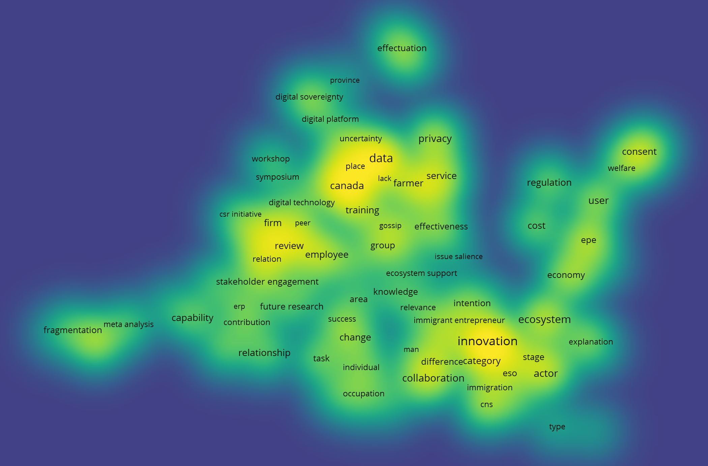
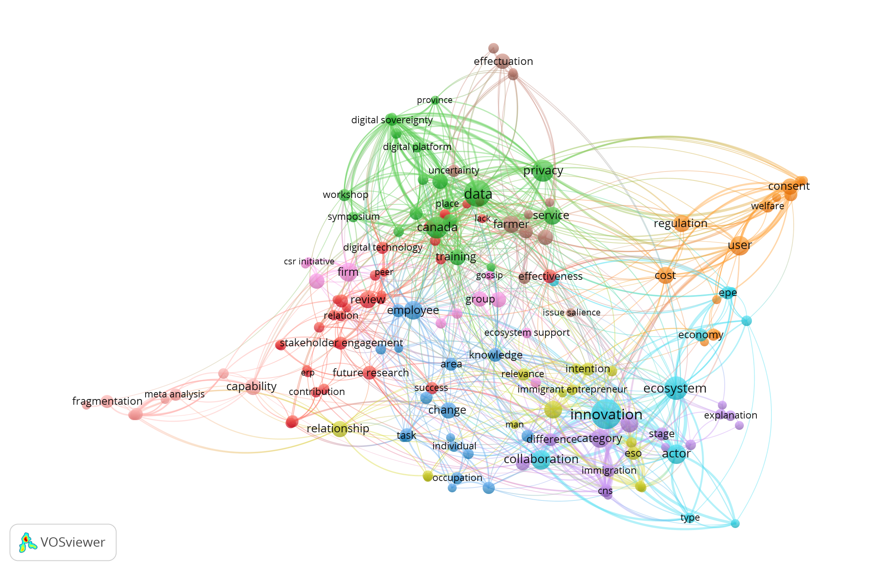

About
Forenture connects artificial intelligence, analytics, and information systems to study emerging technologies and support decision-making. The lab’s work includes text analytics, topic modeling, expert-informed machine learning, reinforcement learning, and technology intelligence methods.


Figure. Visualization of AI-related research themes across Entrepreneurship, Information Systems, and Technology Management (ASAC 2026 Conference).
Research Areas
Technology Scanning & Foresight
AI-assisted methods for identifying, mapping, and interpreting emerging technology trends.
AI & Text Analytics
NLP, topic modeling, clustering, and similarity-based mapping for large research corpora.
Prescriptive Analytics
Decision models, optimization, simulation, and analytics for managerial decision support.
Information Systems
Research and teaching at the intersection of digital systems, business analytics, and innovation.
Selected Publications
-
Fine-tuning topics through weighting aspect keywords
Journal of Big Data, 2026. -
Exploring the technology landscape through topic modeling, expert involvement, and reinforcement learning
arXiv, 2025. -
Technology Scanning: A Systematic Mapping Review Using Text Analytics
Manuscript under revision.
Teaching
My teaching combines analytics, entrepreneurship, information systems, and technology management through applied and experiential learning.
Explore Teaching →Projects
Technology Review Repository
Open research materials, data, and reproducibility resources for technology scanning studies.
AI Topic Modeling
Experiments combining expert input, topic modeling, and adaptive learning methods.